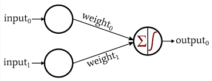
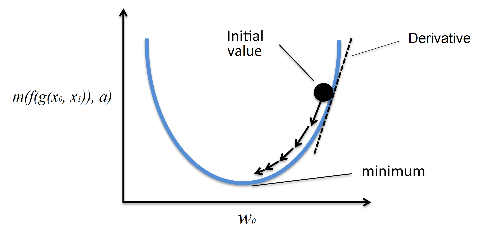

What is Machine Learning?
Machine learning is the study of special computer algorithms that improve automatically over time. Whereas in normal programming, a computer is explicitly told what to do, machine learning uses certain mathematical methods to allow computers to "learn" by themselves. A few of the applications of machine learning are:
- Recommended content in various social media platforms
- The diagnosis of different diseases
- The increased capabilities of robots to complete precise tasks such as surgery
How does Machine Learning Work?
While the above examples may seem unrelated, they all involve one thing: data. The goal of machine learning is to use computer-based methods to find helpful insights from data.
Consider an example of the first application mentioned: YouTube has to decide what videos to recommend to an individual that will maximize the amount of time the individual spends watching videos on YouTube. In order to accomplish this task, the website analyzes a vast array of data that they have collected on the individual in the past to predict which types of videos they can recomend that will maximize the future watch time. This data relates a video's characteristics to whether or not the video has been watched by the individual. In reality, the data involves many different variables; however, for the sake of simplicity, let's assume that the independent variables in this scenario are the length of the video and the number of views the video has, and the dependent variable is whether or not the individual watched the video. A possible subset of the data is shown in the table below:
| Video Length (min) | Number of Views | Watched? |
|---|---|---|
| 1 | 500,000 | Yes |
| 7 | 200 | No |
| 5 | 3,650,000 | Yes |
| 12 | 900,000 | No |
| 0.5 | 48 | No |
| 4 | 12,000,000 | Yes |
Now let's say we have a few options of different videos to recommend, and we need to recommend one of them based on this data. In this case, since there are not many variables or data points we can probably find patterns ourselves that will tell us what videos are more likely to be watched; in reality, however, there can be petabytes of complex data that would be impossible to analyze by hand.
Instead, we can use a machine learning model to automate this process. A machine learning model is like a mathematical function; it takes in an input and produces an output. In our case, we need a machine learning model that will take the length of a video and the number of views it has as input and output either "yes" or "no", depending on whether or not the individual will watch the video. This way, we can create a system that will only recommend videos that the individual is likely to watch (according to our model).

One type of machine learning model we can use is a perceptron (pictured above). A perceptron is a machine learning model that takes multiple numbers as input and outputs a number between 0 and 1. In our case, an output closer to 1 would mean the video is more likely to be watched and an output closer to 0 would mean the video is less likely to be watched. In particular, a perceptron is a chain of mathematical functions. The first function looks like this:
$$g(x_0, x_1) = w_0 \cdot x_0 + w_1 \cdot x_1$$where \(x_0\) is the first input (the length of the video), \(x_1\) is the second input (the number of views the video has), and \(w_0\) and \(w_1\) are parameters of the function that determine how significant each of the inputs are (a higher weight means the corresponding input has a higher significance to the output).
The second function looks like this:
$$f(x) = \frac{1}{1+e^{-x}}$$This takes the output of the first function and "squishes" it between 0 and 1. For very large negative inputs this outputs numbers very close to 0 and for very large positive inputs this outputs numbers very close to 1. The number \(e\) is used for its convenience when calculating the derivative of the function.
Training
The perceptron can be thought of as \(f(g(x_0,x_1))\); it takes as input the length and views of a video and outputs a number close to 0 if the video is not likely to be watched and close to 1 if it is. Now, we just need to know how the parameters \(w_0\) and \(w_1\) are chosen. These parameters are at first randomized, then optimized during a process known as training. During training, the model essentially loops through each previous data point available, predicting what the output of each input should be according to the current state of the model. It then calculates its own error by comparing its predicted output to the actual output. One common metric to calculate the error is the squared error:
$$m(p,a) = (p-a)^2$$where \(p\) is the predicted value and \(a\) is the actual value.
During the training process, the model continually updates its own parameters based on what updates will minimize the error. One strategy used for this is known as gradient descent.
How are Derivatives Involved?
During gradient descent, the derivative of the error with respect to each parameter is calculated. This calculation is simple, as the error is just the chain of functions \(m(f(g(x_0,x_1)),a)\), where \(f(g(x_0,x_1))\) is the output of the perceptron and \(a\) is the actual value. Some methods more advanced than we have seen in class are used to calculate the derivatives (these are explained below); however, the concept remains the same: finding the rate at which the error changes with respect to each parameter. The following extra knowledge is needed:
- Partial Derivatives - To calculate the derivative of a multi-variable function with respect to one of its variables, treat the other variables as constant
- Derivative of \(e^x\) - \(\frac{d}{dx}e^x=e^x\)
- Chain Rule - \([f(g(x))]^\prime=f^\prime(g(x)) \cdot g^\prime(x)\)
In order to calculate the derivative of the error function with respect to \(w_0\), we need to calculate the derivative of each function in the chain of functions. First, let's use the power rule to calculate \(\frac{dm}{df}(f - a)^2\).
$$\frac{dm}{df}(f - a)^2=2 \cdot (f - a)$$Next, we find the derivative of \(f\) with respect to \(g\). Here we use the fact that \(\frac{d}{dx}e^x=e^x\) as well as the power rule and some algebra.
$$\begin{align} \dfrac{df}{dg} \left[ \dfrac{1}{1 + e^{-x}} \right] &= \dfrac{d}{dx} \left( 1 + \mathrm{e}^{-x} \right)^{-1} \\ &= -(1 + e^{-x})^{-2}(-e^{-x}) \\ &= \dfrac{e^{-x}}{\left(1 + e^{-x}\right)^2} \\ &= \dfrac{1}{1 + e^{-x}\ } \cdot \dfrac{e^{-x}}{1 + e^{-x}} \\ &= \dfrac{1}{1 + e^{-x}\ } \cdot \dfrac{(1 + e^{-x}) - 1}{1 + e^{-x}} \\ &= \dfrac{1}{1 + e^{-x}\ } \cdot \left( \dfrac{1 + e^{-x}}{1 + e^{-x}} - \dfrac{1}{1 + e^{-x}} \right) \\ &= \dfrac{1}{1 + e^{-x}\ } \cdot \left( 1 - \dfrac{1}{1 + e^{-x}} \right) \\ &= f \cdot (1 - f) \end{align}$$Finally, we find the derivative of \(g\) with respect to \(w_0\). Note that we treat \(w_1\) as a constant here as we are only finding how the function changes with respect to \(w_0\). We calculate this using the constant rule and constant multiple rule.
$$\begin{align} \frac{dg}{dw_0} (w_0 \cdot x_0 + w_1 \cdot x_1) &= x_0 + 0 \\ &= x_0 \end{align}$$Now we can combine these using the chain rule:
$$\begin{align} \dfrac{dm}{dw_0}(m(f(g(x_0,x_1)),a)) &= m^\prime(f(g(x_0,x_1))) \cdot f^\prime(g(x_0,x_1)) \cdot g^\prime(x_0,x_1) \\ &= 2 \cdot (f(g(x_0,x_1)) - a) \cdot f(g(x_0,x_1)) \cdot (1 - f(g(x_0,x_1))) \cdot x_0 \end{align}$$Similarly, the derivative of \(m\) with respect to \(w_1\) is:
$$2 \cdot (f(g(x_0,x_1)) - a) \cdot f(g(x_0,x_1)) \cdot (1 - f(g(x_0,x_1))) \cdot x_1$$After the derivative of the error with respect to a parameter is calculated, a fraction of the derivative is subtracted from the current value of the parameter. This way, the error is now smaller than it was before this adjustment. As the training process continues, the error gets closer to the minimum, causing the derivative to get smaller, causing each incremental change to get smaller as well. This process is illustrated below:

After the parameters are close enough to their optimal value and the error is small enough, the training process is stopped. This means the perceptron was able to model the data accurately enough. In our case, we would now be able to use the model to make predictions on which videos the individual would be likely to watch.
Summary
- Machine learning is a field of computer science involving calculus
- An example of a machine learning model is a perceptron
- A perceptron can use gradient descent to optimize itself
- This technique involves subtracting a fraction of the derivative of the error from each parameter in order to incrementally reduce the error of the model
Thanks for reading!